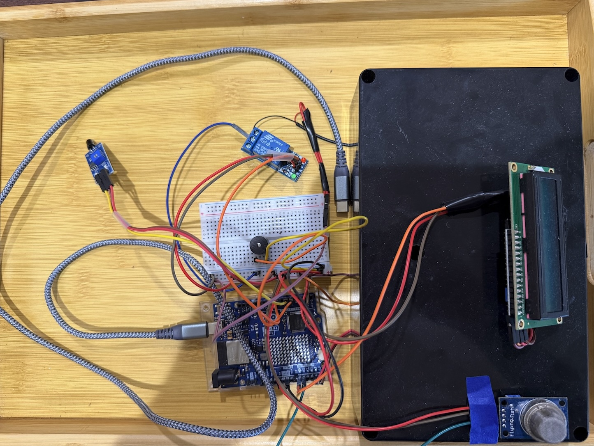

EmberSensor combines local sensing and cloud intelligence to produce a clearer, more actionable picture of wildfire risk.
This video provides a walkthrough of how EmberSensor works and shows the project in action.
Temperature, smoke, and flame-related signals are monitored near the home.
Live weather and nearby wildfire hotspot information are added to local sensor readings.
The platform computes a live fire risk score based on local and surrounding conditions.
When conditions become critical, the system can notify the user and trigger sprinkler response.

EmberSensor is designed to connect local environmental monitoring with broader regional fire awareness. Instead of looking at only one signal, the system combines multiple inputs to form a more complete view of danger.
This approach helps support earlier awareness, better decision-making, and more proactive protection around the home.